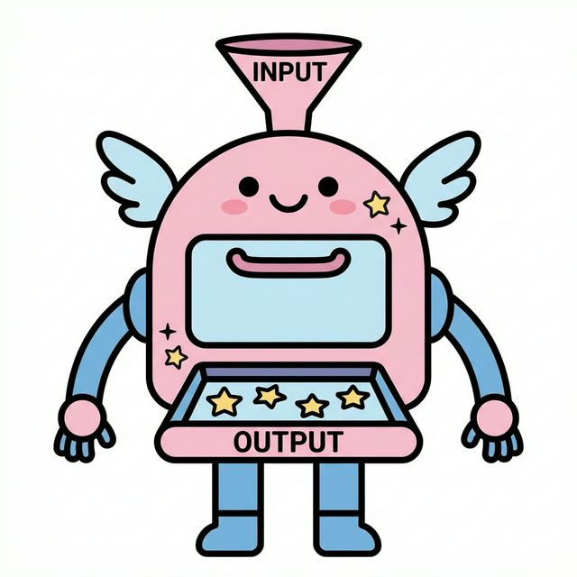

5주차 1강: 파이썬 함수 (Python Functions)
학습 목표
- 함수(Function)의 개념을 “마법 요리 로봇”에 비유하여 쉽게 이해합니다.
- 입력(Input)과 출력(Output)의 흐름을 파악합니다.
- 함수끼리 서로 부르는 호출 관계(Call Flow)를 그림으로 익힙니다.
5.1.1. 함수란 무엇인가요? (The Magic Oven)
함수(Function)는 “재료를 넣으면, 요리를 만들어주는 마법 오븐”과 같습니다.
[그림 1] 마법 요리 로봇 (Magic Oven)
- Input (입력): 밀가루, 설탕 (재료)
- Function (함수): 오븐이 재료를 섞고 굽는 과정 (기계 내부)
- Return (반환): 맛있는 쿠키 (결과물)

왜 함수를 쓰나요?
매번 밀가루 반죽하고, 설탕 넣고, 오븐 온도 맞추고… 귀찮지 않나요? 함수를 만들어두면 “오븐아, 쿠키 구워줘!” 한 마디면 끝납니다. (코드 재사용)
5.1.2. 함수의 구조 (Structure)
마법 오븐을 코드로 만들어 봅시다.
def make_cookie(dough, sugar): # 오븐 이름과 재료 구멍(매개변수)
# --- 오븐 내부 (Indent) ---
print("반죽을 섞습니다...")
print("맛있게 굽습니다...")
cookie = dough + "맛 쿠키"
# -----------------------
return cookie # 완성된 쿠키 내보내기 (반환값)
def: “자, 이제 오븐을 설계하겠다!” (Definition)make_cookie: 오븐의 이름 (함수명)(dough, sugar): 재료 투입구 (매개변수, Parameter)return: 완성품 배출구 (반환값, Return Value)
5.1.3. 함수 호출하기 (Call)
오븐을 설계도만 그려놓고 안 쓰면 의미가 없겠죠? 실제로 작동시켜 봅시다.
# 초코맛 쿠키 만들기
my_snack = make_cookie("초코", 30)
print(f"내가 만든 간식: {my_snack}")
# 출력: 내가 만든 간식: 초코맛 쿠키
[그림 2] 함수 호출 흐름
주문(Call) -> 요리(Execution) -> 배달(Return)
sequenceDiagram
participant User as 사용자 (Main)
participant Function as make_cookie (오븐)
User->>Function: 재료("초코", 30) 넣고 버튼 누름 (Call)
Note over Function: 지이잉~ (코드 실행)
Function-->>User: "초코맛 쿠키" 반환 (Return)
5.1.4. 함수끼리 부르기 (Function Call Chain)
함수 안에서 또 다른 함수를 부를 수도 있습니다. 마치 “쿠키 공장”처럼요!
시나리오: 쿠키 선물 세트 만들기
make_cookie: 쿠키를 굽는 기계pack_box: 쿠키를 상자에 담는 기계 (여기서make_cookie를 사용!)
def make_cookie(flavor):
return f"{flavor} 쿠키"
def pack_box(flavor):
print("상자를 준비합니다.")
# 쿠키 기계에게 일을 시킵니다!
cookie = make_cookie(flavor)
print(f"{cookie}를 상자에 담았습니다!")
return "선물 세트 완성"
# 공장 가동!
result = pack_box("딸기")
print(result)
[그림 3] 공장의 작업 흐름
Main이 pack_box를 부르고, pack_box가 다시 make_cookie를 부릅니다.
graph TD
subgraph Factory ["쿠키 공장"]
Main["주문 들어옴"] -->|Call| Pack["포장 기계 (pack_box)"]
Pack -->|Call| Bake["오븐 (make_cookie)"]
Bake -->|Return '쿠키'| Pack
Pack -->|Return '세트'| Main
end
style Bake fill:#ff9,stroke:#333
style Pack fill:#aaf,stroke:#333
정리 (Summary)
이 강의에서 배운 핵심 내용을 요약해 봅시다.
- [핵심 1]: 함수(Function)는 코드를 재사용 가능한 부품으로 만드는 마법 상자입니다.
- [핵심 2]:
def로 정의하고,return으로 결과값을 반환합니다. - [핵심 3]: 함수를 사용하면 코드의 가독성이 좋아지고 유지보수가 쉬워집니다.